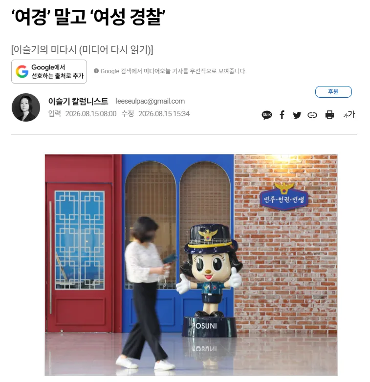
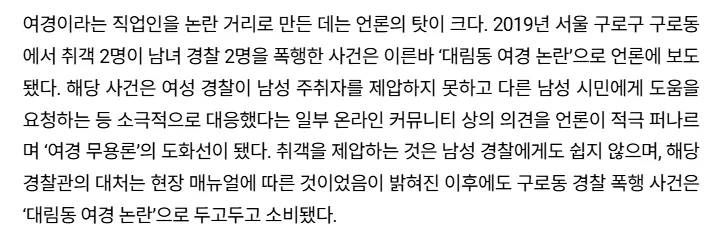

https://www.mediatoday.co.kr/news/articleView.html?idxno=336367
'한남' 말고 '한국 남성'으로 불러달라 그런 건가


https://www.mediatoday.co.kr/news/articleView.html?idxno=336367
'한남' 말고 '한국 남성'으로 불러달라 그런 건가
ㅅㅂ 여성 경찰로 따로 부를게 아니라 성별 상관없이 경찰관으로 부를 수 있는 사람들을 경찰관으로 뽑아야지
근데 우리나라는 그냥 전통적 유교 국가라 여자가 일하면 여성 이라고 붙여주는게 보편적 생각임. 그냥 그렇게 생각하면되는거 사실 별거 아님.. 그게 서양적 사고관으로 차별이라 생각하면 그냥 어쩔수 없는것임.
"븅신"
줄여쓰면 큰일난다노~
느금
뭔 차이야
공문서에 여경 여군 이런게 싫다고 할순 있는데
남여를 떠나서 여성 인원들이 동일한 수준인가는 의문임
또 지랄이네
여경성찰
또 지랄이네
ㅋㅋㅋㅋ 경찰도아니고ㅋㅋㅋ 여자경찰은 또 뭐야
태양을 다르게 부른다고 태양이 아닐쏘냐
경찰≠여경=여성경찰
단어에 왤케 집착을 하지? 아가씨처럼 ㅋㅋ
여경이나 여성경찰이나
치안조무사들이 뭔 ㅋㅋㅋㅋ
단어가 부정적인 뜻을 가지는건 글짜가 못나서 그런게 아니다
걍 사무 보시고 여성 범죄만 처리하면 되잖아
1인분 했으면 그냥 경찰이라고 했겠지.
ㅋㅋ병신새끼들 호칭이 문제가 아닌 걸 그들만 모름
경찰아가씨가 적당한듯
그걸 원하면 구분할필요가 없게 잘하라고
별 ㅅㅂㅋㅋㅋ
병신같은 련들
갱찰
치안조무사
앞으로 모든 여성대상 강력범죄 현장출동은 여성경찰만 투입합시다
여자 경찰이라 불렀음 여경이라 불러달라했을듯
여성경찰을 줄여서 여경이라 부르는건 아닐까요? 이 병신들아
여경 자체가 여성경찰, 여자경찰 줄임말인데..
여경 비율 줄이라니까 현장에 여경이 없으면 사람들 눈에 거슬릴 일도 없음
가뜩이나 경찰은 시선 많이받는 직업인데 이미지까지 그렇게 박혔으니 여경들은 10개중에 하나만 실수해도 쌍욕을 먹을수밖에 없음
소방이나 군인처럼 안에 처박혀있으라고 왜 현장에 나와서 업무에 빵구를 내고 사람들을 화나게 만들어
소비< 이 단어 쓰는 사람 거르면됨
현장 매뉴얼???
일반인 남성에게 도와달라 하는게 현장 매뉴얼이라고???
여경 성찰
치안조무사
'여'성 '경'찰 = 여경
지랄하네 미친년들
여성경찰 줄임말이 여경인데
줄여부르지말고 길게 불러달라는겨?
멈춰!
치조치조치조치조치조치조
그래 창식아
일이나 해
비냉 말고 비빔 냉면이라고 불러주세요
아니 진짜로 턱걸이 10개 이하로 다 쳐내야 한다니까
이건 또 무슨 신박한 개씹소리야
말 줄이지 말라는거임? ㅋㅋㅋㅋㅋㅋ
일은 안하고 저딴거만 하는거?